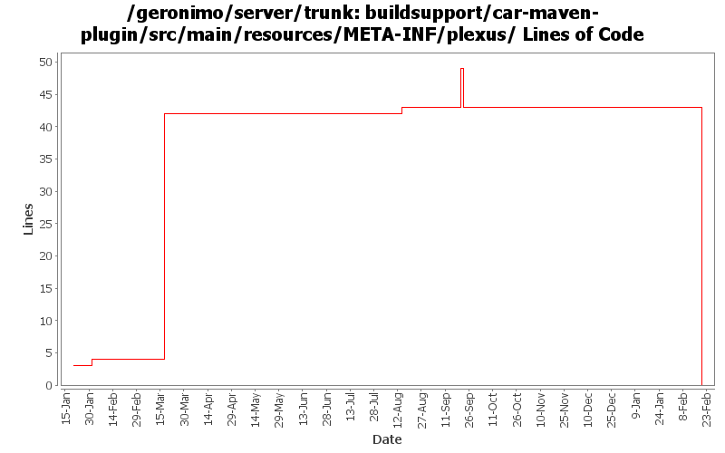

[root]/buildsupport/car-maven-plugin/src/main/resources/META-INF/plexus

| Author | Changes | Lines of Code | Lines per Change |
|---|---|---|---|
| Totals | 8 (100.0%) | 66 (100.0%) | 8.2 |
| djencks | 6 (75.0%) | 66 (100.0%) | 11.0 |
| jdillon | 2 (25.0%) | 0 (0.0%) | 0.0 |
GERONIMO-4538 Move stuff around so framework is self contained and builds the framework server. No groupId changes in this revision in case people dont like this change
0 lines of code changed in 1 file:
GERONIMO-4239, GERONIMO-4302. Fix more classpath issues in console, revert broken attempt to have client-system.jar self-install itself
8 lines of code changed in 1 file:
GERONIMO-4302 have client-system.car self-extract client.jar and the client scripts. This is somewhat questionable but lets see how it works
14 lines of code changed in 1 file:
GERONIMO-4248 add dependency history checking. Need to check that this doesn't cause build problems
2 lines of code changed in 1 file:
GERONIMO-3924 Make car-maven-plugin have a server-assembly packaging with lifecycle that avoids need for tools-maven-plugin
38 lines of code changed in 1 file:
GERONIMO-3791 Extract the dependencies from the deployed car file's environment to put in the geronimo-plugin.xml. Use previous 'direct-from-maven' dependencies for boilerplate etc that do not have config.ser files
4 lines of code changed in 1 file:
(GERONIMO-3771) Moved maven-plugins/* to buildsupport/*, updated groupId to org.apache.geronimo.buildsupport
0 lines of code changed in 2 files: